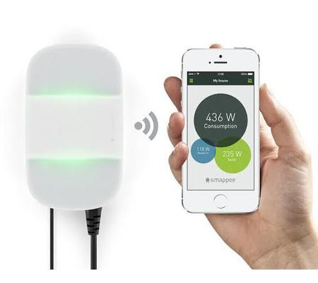
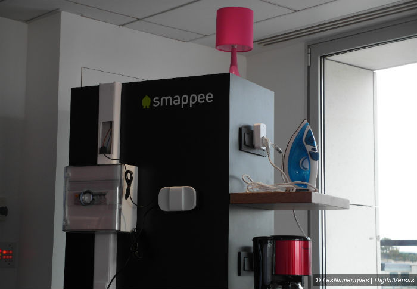
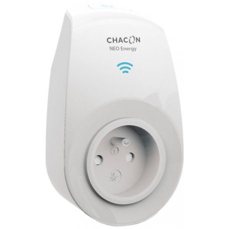
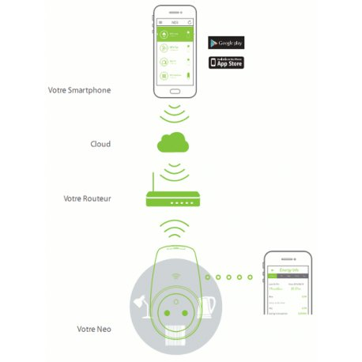
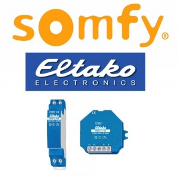
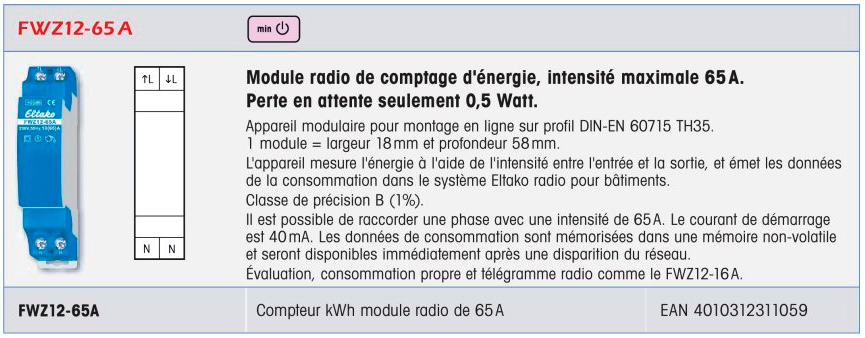
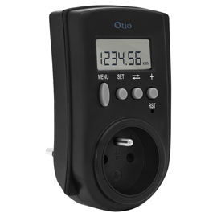
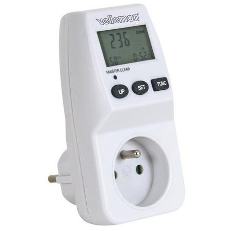

Avantage et inconvénient de la concurrence de Simpl'Eco :
Le nombre de concurrent qu'il peux avoir, ne sont pas nombreux directement mais le sont indirectement. Le fait que ça ne soit pas encore connus, mais en expansion est un avantage certain.
nos concurrent direct sont :
Smappee : www.smappee.com


Smappee, récemment lancé sur le marché, est un boîtier connecté que l'on installe sur son compteur électrique pour suivre sa consommation électrique. Le but est d'en prendre conscience, de la contrôler et de la faire diminuer. Vendu 199 €, ce boîtier fonctionne sans abonnement.
NEO POWER Wifi : www.econologie.com
Compteur électrique connecté NEO POWER WIFI Smartphone :


Prise compteur connectée NEO POWER Wifi pour Smartphone Android ou iPhone. Prise contrôlée à distance par Internet avec compteur de consommation (Puissance instantanée, suivi et historique des consommations) - NEO Power.
https://www.econologie.com/shop/compteur-electrique-connecte-neo-power-wifi-smartphone-p-596.html
59.50EURTTC
www.somfy.fr somfy :
SOMFY Box / TAHOMA :


SOMFY BOX / TAHOMA : Suivre sa consommation électrique avec les modules Eltako Enocean.
Pour pouvoir suivre vos consommations électriques sur la SOMFY Box et suivre ce tutoriel, il vous faudra :
– Une SOMFY Box
– Un GATEWAY Enocean USB300 (Indispensable pour ajouter la compatibilité au protocole Enocean a votreSOMFY Box, puisque les modules ELTAKO cités dans cet article communiquent sur ce protocole…)
– Un capteur de consommation ELTAKO Enocean a choisir suivants vos besoins (voir les modèles présentés ci-après).
Vous pourrez les trouver sur la boutique My-Domotique
– Des connaissances électriques de base (Câblage tableau électrique, raccordement de prise électrique)
– Du matériel d’électricien (Lampe frontale, Pince a dénuder, tournevis, pince coupante, fil électrique …)
– Une bonne heure pour réaliser l’installation et la configuration (Par module).
Castorama :
Contrôleur de consommation électrique. Ce compteur digital de consommation électrique permet de contrôler la consommation des appareils électriques et ainsi diminuer les factures d'électricité. Il mesure et affiche la puissance effective en W, la consommation en kWh et en coût après renseignement du tarif, ainsi que la durée de fonctionnement.
Caractéristiques techniques :

Alimentation : 230 V - 50 Hz.
Affichage : Sur écran LCD.
Mesures : Puissance électrique, consommation électrique, coût de la consommation, durée de fonctionnement.
Coloris : Noir.
Dimensions : H 120 x L 64 x P 76 mm.
18,90 €
econologie :
Prise compteur wattmètre pour mesurer et suivre les consommations d'appareils électrique (climatisation, pompe à chaleur air-air, ordinateur...). Double tarif horaire. Précision: 0.2W /0.01 A. Puissance maximale: 16A / 3600W.
24.50EUR (econologie.com)
Nos candidat direct sont porter parfois de maniere tres approfondie dans le domaine de la domotique et bien en avance, mais leur manque de communication a l'egard de ce produit les handicap.
Il faut faire des recherches trés precise pour pouvoir les trouver.
Nos conçurent indirect sont quand a eux très varier, ont voit une nette tendance dans ce domaine, et les box en général commence a imbriquer ce genre de technologie directement (relier les prise électrique de la maison) qui porte a penser que la consommation électrique se verra même sur notre télé en direct.
Leur avantages sont leur avance et leur poid financier ,leur inconvénient et qui est en avantage énorme pour nous sont leur manque de communication.